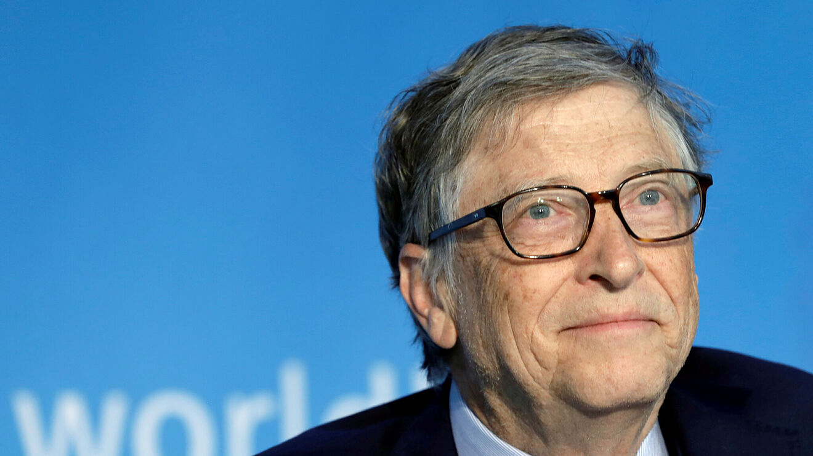

Bill Gates
Bill Gates (1955) é um empresário norte-americano, um dos fundadores da Microsoft, uma gigante
desenvolvedora de softwares. Magnata e filantropo é considerado um dos homens mais ricos do mundo. Em 2000
criou a Bill & Melinda Gates Foundation, a maior fundação de caridade do mundo.
William Henry Gates nasceu em Seattle, no estado de Washington, nos Estados Unidos, no dia 28 de outubro de
1955. Seu pai, William H. Gates era advogado, e sua mãe, Mary Maxwell Gates, professora. Bill e suas irmãs
estudaram nas melhores escolas de sua cidade.

Vida e Obra
- Bill Gates começou a trabalhar com programas de jogos eletrônicos, os "fliperamas". Com 17 anos de
idade desenvolveu junto com Paul Allen um software para leitura de fitas magnéticas. Criou, em
parceria com o sócio, a empresa Traf-o-Data, mas não demonstrou credibilidade aos clientes por conta
da idade dos integrantes.
- Em 1973 ingressou em Harvard, mas em 1975 abandonou os cursos de Matemática e de Direito. Nesse
mesmo ano, junto com Paul Allen, desenvolveu o sistema de interpretação da linguagem BASIC para o
computador chamado “Altair 8800” e com dinheiro de suas vendas, fundaram a "Microsoft", empresa de
softwares para computadores particulares, os chamados PCs.
- Em 1977, a empresa líder no mercado de grandes computadores, a IBM, resolve entrar no mercado de
microinformática com o PC, fechando contrato com a recém-criada Microsoft, que havia comprado por
US$ 50 mil um programa desenvolvido para o processador Intel e depois de personalizar o programa o
vendeu por US$ 8 milhões de forma personalizada, mantendo a licença do produto, criando o MS-DOS. A
partir de então, a Microsoft foi se transformando em um império de programas eletrônicos.
- Em 1983 a Microsoft lançou o Windows, que aos poucos conquistou 90% dos computadores. Com suas ações
em alta, Bil Gates, com 31 anos já era bilionário.
-
Bill Gates é considerado um dos homens mais ricos do mundo. Ganhou títulos honoríficos, como o da
Ordem do Império Britânico e recebeu o status de Honoris Causa da Universidade de Cambridge e
Harvard.
Em 2000, Bil Gates criou a "Bill & Melinda Gates Foundation", voltada para o financiamento de
pesquisas sobre a AIDS. Em 27 de junho de 2008, Gates deixa a direção da Microsoft para se dedicar a
projetos filantrópicos de sua fundação, embora ainda mantenha alguma participação nas decisões
finais da Microsoft.